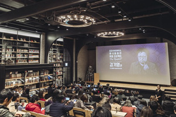
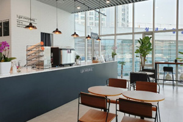
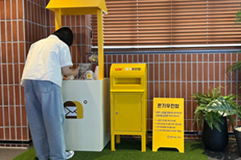
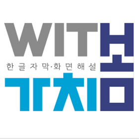
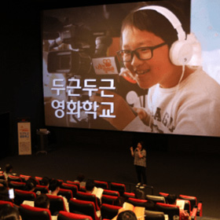
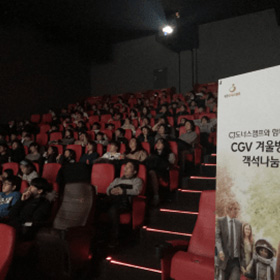
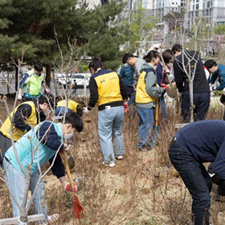
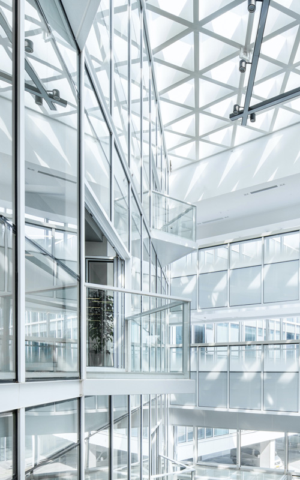

HOME > 지속 가능 경영 > 사회 경영
ESG Society
CULTURE GLOBAL ONLYONESociety Performance
ESG Management PerformanceCJ CGV는 공동체와 더불어 성장하는 기업이 되기 위하여
다양한 이해관계자와 소통하며 협력합니다.
Society
공동체와 더불어 성장하는 기업지역과 파트너와의 상생
"CJ CGV는 지역 경제 및 문화 예술 활성화를 위해 다양한 콘텐츠와 공간을 제공하며 지역사회 발전 및 일자리 창출을 위해 노력합니다."
-

- 지역 영화제 협력
- CJ CGV는 지역 문화 활성화와 영화산업의 발전을 위해 노력합니다.
- 유수의 국제 영화제 개최 협력 뿐 아니라 다양한 주제와 이슈를 전파하는 영화제, 지역 문화를 알리는 영화제, 미래세대의 창작활동을 지원하는 영화제 등과도 협력하고 있습니다.
- 또한 일부 영화제에서는 'CGV 아트하우스상'을 운영하여 신진 영화인 발굴과 한국 영화의 창작 활성화에 기여하고 있습니다.
-

- 다문화 여성 및 장애인 일자리 창출
- CJ CGV는 다문화 결혼이주여성의 사회 참여를 위한 <사회적협동조합 오아시아>카페, 한국장애인개발원과 협력한 <아이갓에브리씽(I got everything)>카페 운영을 통해 취약 계층의 자립기반 마련과 사회참여 확대에 기여하고 있습니다.
- 그 밖에도 극장 내 직업훈련센터를 운영하며 바리스타 체험, 매점 및 플로어 운영 현장 중심의 직업 훈련 기회를 제공하고 있습니다.
-

- 온기우편함 운영
- CJ CGV는 2021년 12월 사단법인 온기와 함께 극장 내 온기우편함을 설치, 운영하기 위한 업무협약을 진행하였습니다. ‘온기우편함’은 익명으로 고민 편지를 보내면 ‘온기우체부’가 손편지로 답장을 전해주는 활동입니다.
- CGV는 문화 공간으로서의 역할뿐만 아니라, 사회구성원의 우울증을 예방하고 일상의 위로를 전하는 심리적 안전망으로서의 역할을 수행하고자 합니다.
사회공헌 활동
"CJ CGV는 사회 구성원 모두가 다양한 문화를 즐길 수 있는 사회공헌활동을 추진하고 있습니다."
-

- 가치봄
- CJ CGV는 2011년부터 시·청각 장애인을 위한 한글 자막/화면 해설 영화(배리어프리 영화) 정기 상영을 시작하였습니다. 2019년부터 ‘가치봄’ 브랜드 론칭을 통해 장애인 영화관람 환경 개선을 위해 노력하고 있습니다.
-

- 두근두근 영화학교
- CJ CGV는 청소년을 대상으로 영화와 연계한 교육 체험활동 제공하고 있습니다. 2021년에는 ‘두근두근 영화학교’를 통해 영화 교육 교재와 교과연계표를 무상으로 제공하는 등 미래세대의 영화 교육 활성화를 위해 노력하고 있습니다.
-

- 객석나눔
- CJ CGV는 지역 내 복지기관과 결연을 맺고 문화 소외계층에 영화 관람 및 컬쳐플렉스 체험 활동을 통해 활발한 참여를 지원하고 있습니다. 2021년에는 영화와 <쇼그맨> 공연에도 시각장애인 고객을 초청해 객석나눔을 진행했습니다.
-

- 임직원 봉사활동
- CJ CGV는 임직원 참여 봉사활동을 장려합니다. 특히, 근무시간 중 봉사활동 독려를 통해 시간적 제한이 있는 임직원들에게 다양한 분야의 사회 문제 해결에 임직원이 적극적으로 참여할 수 있도록 장려 및 지원하고 있습니다.
일하기 좋은 일터 구축
"CJ CGV는 회사의 구성원이라면 누구나 최고 인재로 성장할 문화와 제도를 구축하고 있으며 인권 존중을 기반으로 한 안전한 근무 환경을 조성하기 위해 노력합니다."

-
- 1. 인권 존중 및 보호
- CJ CGV는 경영 철학에 상생과 존중의 가치를 명시하며,
구성원 및 이해 관계자의 인권 존중을 위해 ‘인권경영 선언문’을 제정해 대내외에 공개하고
이를 실천하고 있습니다. - 또한 2022년 국제연합(UN) 산하의 글로벌 이니셔티브 UNGC(유엔글로벌콤팩트) 가입해
환경·인권·반부패 등 10대 원칙을 바탕으로 한 사회적 책임을 수행하고 있습니다.
-
- 2. 안전한 근무 환경
- CJ CGV는 구성원들의 근무현장에서 발생하는
안전사고 신속공유체계와 신속공유 시스템이 구축되어 있습니다. - 안전사고 발생현황을 파급효과, 발생가능성, 관리취약성으로 위험도를 평가하여
지속적으로 위험도를 낮추는 활동을 진행하고 있습니다.
-
- 3. 일과 삶의 조화
- CJ CGV는 임직원들의 일과 삶의 균형(Work&Life Balance)을 위해
생활, 여가, 건강 등을 위한 복지제도를 시행합니다. - 임신 및 출산 축하 선물, 태아검진휴가, 긴급 자녀 돌봄 단축근로, 자녀입학 휴가 등과 같은
제도를 운영해 2014년부터 가족 친화 우수 기업 인증을 보유하고 있습니다.
-
- 4. 다양한 인재 육성
- CJ CGV는 능력과 의지가 있는 인재에게 다양한 직무와 사업에서의 성장 기회를 제공합니다.
성과에 따른 파격 보상을 통해 회사와 구성원이 지속 가능한 성장을 견인할 수 있는
조직문화를 만들어 나가기 위해 노력합니다.
-
- 5. 업무 시간과 장소 자기주도적 설계
- CJ CGV는 구성원에게 업무 시간과 장소를 자기 주도적으로 설계할 수 있도록 개선하여
업무 몰입도 향상 및 성과 창출을 적극 지원하고 있습니다. - 비대면 상황에서도 구성원 간 원활하고 효율적인 소통, 협업이 이뤄질 수 있도록
온라인 협업 툴을 운영하고 있습니다.